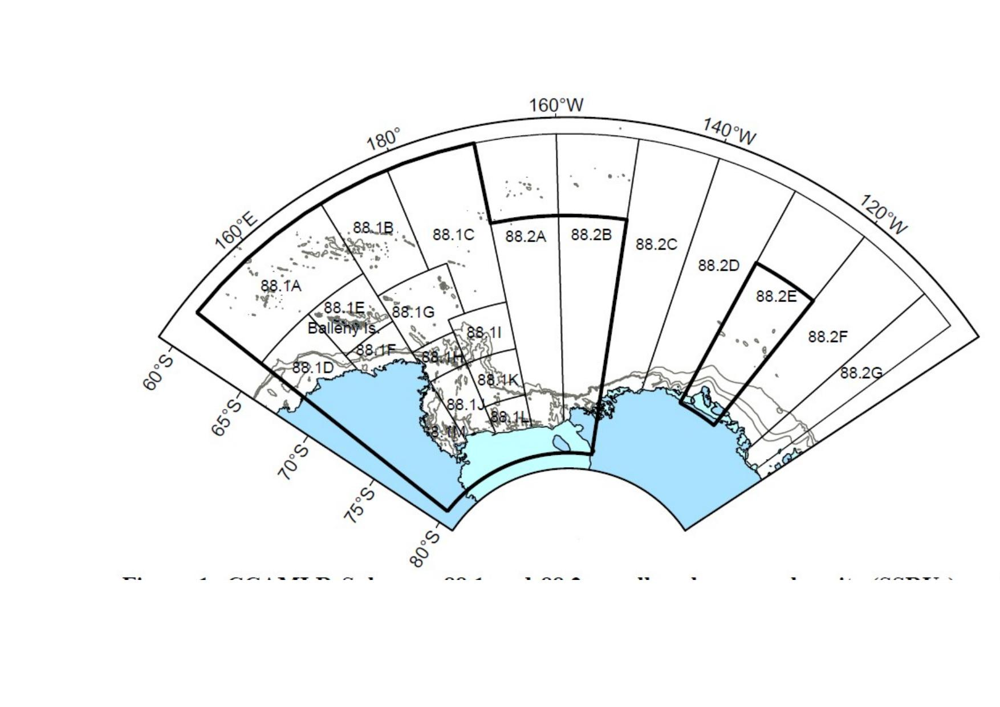

Заходи зі збереження
2.1 Розклад чинних заходів зі збереження 2025/26
📄 Файл:
EN - schedule 2025-26.pdf
↗ Відкрити
⬇ Завантажити
Документ (понад 15 000 рядків, 366 сторінок) ухвалений на 44-му засіданні Комісії (20–31 жовтня 2025 р.). Кожен захід має унікальний код: перші дві цифри — категорія, другі дві — номер у категорії, рік у дужках — рік ухвалення версії, напр. 22-06 (2010). Нові чи змінені заходи повідомляються на початку листопада, набирають чинності зазвичай 1 грудня, а стають обов'язковими (ст. IX.6 Конвенції) приблизно через 180 днів (травень наступного року).

Дотримання (серія 10)
| № CM | Назва | Застосування / ліміт |
|---|---|---|
| 10-01 (2014) | Маркування риболовних суден і знарядь лову | Усі промисли |
| 10-02 (2022) | Ліцензування та інспекційні зобов'язання держав прапора | Усі промисли |
| 10-03 (2025) | Портові інспекції суден, що перевозять морські живі ресурси Антарктики | Усі промисли |
| 10-04 (2025) | Автоматизовані супутникові системи моніторингу суден (VMS) | Усі промисли |
| 10-05 (2022) | Схема документування вилову (CDS) для Dissostichus spp. | Dissostichus spp. |
| 10-06 (2016) | Схема сприяння дотриманню правил суднами Договірних Сторін | Усі промисли |
| 10-07 (2016) | Схема сприяння дотриманню правил суднами держав, що не є Сторонами | Усі промисли |
| 10-08 (2017) | Схема сприяння дотриманню правил громадянами Договірних Сторін | Усі промисли |
| 10-09 (2025) | Система повідомлень про перевантаження в районі дії Конвенції | Усі промисли |
| 10-10 (2023) | Процедура оцінки дотримання CCAMLR | Усі промисли |
Загальні питання промислу (серія 20)
| № CM | Назва | Застосування / ліміт |
|---|---|---|
| 21-01 (2019) | Повідомлення про намір розпочати новий промисел | Нові промисли |
| 21-02 (2025) | Пошукові (exploratory) промисли | Усі пошукові промисли |
| 21-03 (2023) | Повідомлення про намір участі у промислі Euphausia superba (криль) | Промисел криля |
| 22-01 (1986) | Регулювання вимірювання розміру вічка сітки | Доповнює CM 22-02 |
| 22-02 (1984) | Розмір вічка сітки | D. eleginoides та інші нототенієві |
| 22-03 (1990) | Розмір вічка для Champsocephalus gunnari | C. gunnari |
| 22-04 (2010) | Тимчасова заборона глибоководного зябрового лову | Зяброві промисли |
| 22-05 (2008) | Обмеження на донне тралення у відкритому морі району Конвенції | Донні тралові промисли |
| 22-06 (2019) | Донний промисел у районі дії Конвенції (заходи щодо ВМЕ) | Донні промисли |
| 22-07 (2013) | Тимчасовий захід для донного промислу при виявленні потенційних ВМЕ | Донні промисли |
| 22-08 (2009) | Заборона промислу Dissostichus spp. на глибині менше 550 м у пошукових промислах | Пошукові промисли |
| 22-09 (2012) | Захист зареєстрованих ВМЕ у підрайонах/районах, відкритих для донного промислу | Різні промисли |
| 23-01 (2024) | Система 5-денної звітності про вилов та зусилля | Різні промисли |
| 23-02 (2016) | Система 10-денної звітності | Різні промисли |
| 23-03 (2016) | Система щомісячної звітності | Різні промисли |
| 23-04 (2016) | Щомісячна дрібномасштабна звітність (трал, ярус, пастки) | Усі, крім промислу криля |
| 23-06 (2022) | Система звітності для промислу Euphausia superba | Промисел криля |
| 23-07 (2016) | Система щоденної звітності для пошукових промислів | Пошукові промисли (крім криля) |
| 24-01 (2023) | Застосування заходів зі збереження до наукових досліджень | Усі промисли |
| 24-02 (2014) | Обважнення ярусу для збереження морських птахів | Ярусні промисли |
| 24-04 (2017) | Тимчасові особливі райони наукових досліджень у зонах відступу шельфового льоду | Підрайони 48.1, 48.5, 88.3 |
| 24-05 (2025) | Промисел для дослідницьких цілей у сезоні 2025/26 (за CM 24-01) | Усі промисли |
| 25-02 (2024) | Мінімізація випадкової смертності морських птахів під час ярусного лову | Ярусні промисли |
| 25-03 (2024) | Мінімізація випадкової смертності птахів і ссавців під час тралового лову | Тралові промисли |
| 26-01 (2022) | Загальний захист довкілля риболовними суднами | Усі промисли |
Промислові заходи: загальні (серія 30)
| № CM | Назва | Застосування / ліміт |
|---|---|---|
| 31-01 (1986) | Регулювання промислу навколо Південної Джорджії (підрайон 48.3) | Усі дозволені види |
| 31-02 (2007) | Загальний захід закриття всіх промислів | Усі промисли |
| 32-01 (2001) | Промислові сезони | Усі промисли |
| 32-02 (2017) | Заборона спрямованого промислу окремих видів | Різні види |
| 32-09 (2025) | Заборона спрямованого промислу Dissostichus spp., крім передбачених заходів, сезон 2025/26 | Dissostichus spp. |
| 32-18 (2006) | Збереження акул | Акули |
Ліміти прилову (серія 33)
| № CM | Назва | Застосування / ліміт |
|---|---|---|
| 33-01 (1995) | Ліміт прилову у підрайоні 48.3 (5 видів нототеній та ін.) | Напр., G. gibberifrons 1470 т, C. aceratus 2200 т |
| 33-02 (2025) | Ліміт прилову у поділі 58.5.2, сезон 2025/26 | C. rhinoceratus 1663 т, Macrourus spp. 409/360 т, скати 120 т |
| 33-03 (2025) | Ліміт прилову в нових і пошукових промислах, сезон 2025/26 | Скати, Macrourus spp. та ін. |
Клич — Dissostichus spp. (серія 41)
| № CM | Назва | Застосування / ліміт |
|---|---|---|
| 41-01 (2025) | Загальні заходи для пошукових промислів Dissostichus spp., сезон 2025/26 | Усі пошукові промисли |
| 41-03 (2025) | Ліміти промислу в підрайоні 48.4, сезон 2025/26 | D. eleginoides 33 т, D. mawsoni 32 т |
| 41-04 (2025) | Ліміти пошукового промислу D. mawsoni в підрайоні 48.6 | 713 т |
| 41-05 (2025) | Ліміти пошукового промислу D. mawsoni в поділі 58.4.2 | 281 т |
| 41-06 (2025) | Ліміти пошукового промислу D. eleginoides на банці Елан (58.4.3a) | 0 т |
| 41-07 (2025) | Ліміти пошукового промислу D. mawsoni на банці БАНЗАРЕ (58.4.3b) | 0 т |
| 41-08 (2024) | Ліміти промислу D. eleginoides у поділі 58.5.2, сезони 2024/25–2025/26 | 2120 т/сезон |
| 41-09 (2025) | Ліміти пошукового промислу D. mawsoni в підрайоні 88.1, сезон 2025/26 | 3278 т |
| 41-10 (2025) | Ліміти пошукового промислу D. mawsoni в підрайоні 88.2, сезон 2025/26 | 1624 т |
| 41-11 (2025) | Ліміти D. mawsoni у поділі 58.4.1, сезон 2025/26 | 0 т — закрито для спрямованого промислу |
Крижана риба (серія 42)
| № CM | Назва | Застосування / ліміт |
|---|---|---|
| 42-01 (2025) | Ліміти промислу Champsocephalus gunnari у підрайоні 48.3, сезони 2025/26–2026/27 | 3430 т / 2230 т |
| 42-02 (2025) | Ліміти промислу C. gunnari у поділі 58.5.2, сезони 2025/26–2026/27 | 1429 т / 1126 т |
Криль (серія 51)
| № CM | Назва | Застосування / ліміт |
|---|---|---|
| 51-01 (2024) | Пересторожні ліміти вилову Euphausia superba у підрайонах 48.1–48.4 | 5,61 млн т, тригер 620 000 т |
| 51-02 (2024) | Ліміт вилову Euphausia superba у поділі 58.4.1 | 440 000 т |
| 51-03 (2024) | Ліміт вилову Euphausia superba у поділі 58.4.2 | 2 645 000 т |
| 51-04 (2025) | Загальний захід для пошукових промислів Euphausia superba, сезон 2025/26 | Усі пошукові промисли |
| 51-06 (2019) | Загальний захід наукового спостереження на промислах Euphausia superba | — |
Охоронювані території (серія 90)
| № CM | Назва | Застосування / ліміт |
|---|---|---|
| 91-01 (2004) | Процедура надання захисту ділянкам CEMP | — |
| 91-02 (2024) | Захист цінностей особливо керованих і охоронюваних районів Антарктики | — |
| 91-03 (2009) | Захист південного шельфу Південних Оркнейських островів | — |
| 91-04 (2011) | Загальні рамки створення морських охоронних районів CCAMLR | — |
| 91-05 (2016) | Морський охоронний район моря Росса | — |
2.2 Чинні резолюції Комісії
- 7/IX — дрифтерний промисел у районі дії Конвенції
- 10/XII — вилов запасів, що зустрічаються як у межах, так і поза межами району дії Конвенції
- 14/XIX — Схема документування вилову: впровадження державами, що приєдналися, та не-Сторонами
- 15/XXII — використання портів, що не впроваджують Схему документування вилову
- 16/XIX — застосування VMS у Схемі документування вилову
- 17/XX — використання VMS для верифікації даних CDS поза районом дії Конвенції
- 18/XXI — вилов D. eleginoides поза юрисдикцією прибережних держав (райони ФАО 51 і 57)
- 19/XXI — прапори недотримання правил
- 20/XXII — стандарти льодового підкріплення суден для високоширотних промислів
- 22/XXV — міжнародні дії для зниження випадкової смертності морських птахів
- 23/XXIII — безпека на борту суден, що ведуть промисел у районі дії Конвенції
- 25/XXV — протидія ННН-промислу суднами прапорів держав, що не є Сторонами
- 27/XXVII — використання окремої тарифної класифікації для антарктичного криля
- 28/XXVII — обмін баластних вод у районі дії Конвенції
- 29/XXVIII — ратифікація Конвенції про рятування Членами CCAMLR
- 30/XXVIII — зміна клімату
- 31/XXVIII — найкраща доступна наука
- 32/XXIX — запобігання, стримування та ліквідація ННН-промислу
- 33/XXX — надання інформації про судна прапора морським рятувально-координаційним центрам
- 34/XXXI — підвищення безпеки риболовних суден у районі дії Конвенції
- 35/XXXIV — судна без національності
- 36/41 — зміна клімату
Підсумок
Коментар: Це найважливіший документ пакету з погляду юридичної відповідальності: ліміти вилову за підрайонами (серія 41 — клич, 42 — крижана риба, 51 — криль) щороку змінюються, тож саме ці цифри (а не заходи попередніх сезонів) визначають легальність вилову в конкретному рейсі 2025/26.